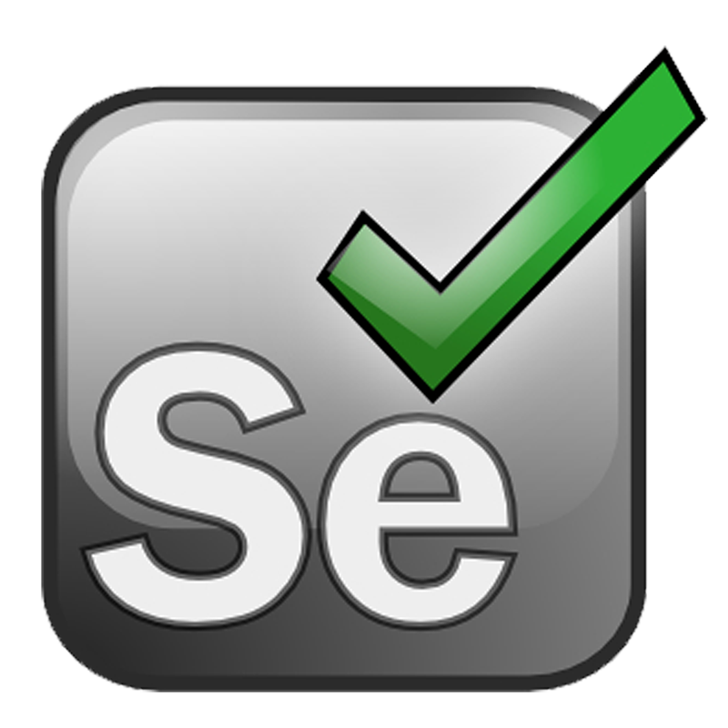

Web Application Testing Personal Project
This project is an independent test automation and manual functional testing initiative aimed at validating the core capabilities of Firefly III, a personal finance manager. It combines automated tests (Selenium WebDriver, TestNG, Maven, Allure) with well-documented manual test cases and a test plan covering registration, login, logout, password recovery, and account and budget management.
Main characteristics of the project:
- Test Automation: Developed automated tests using Selenium WebDriver, TestNG, and Maven to verify key Firefly III features (login, logout, password recovery, account management, invoices, and budgets).
- Manual testing: A structured approach with a test strategy, test plan, user stories, test cases, and bug reports.
- CI/CD integration: GitHub Actions automatically run tests on every code change, ensuring continuous quality assurance.
- Reporting: Allure generates visually rich, detailed reports that help quickly identify and analyze defects.
- Logging: Log4j2 is used for advanced logging to effectively track test execution and diagnose issues.
- Test Data Cleanup: Automated mechanism ensures a clean test environment for every run.
- Modular structure: Organized using the Page Object Model for easier maintenance and scalability.
- Educational goal: Demonstrates test automation methods and serves as a personal learning initiative.
Key Technologies:
 Java 17
Java 17
 Maven
Maven
 TestNG
TestNG

Selenium WebDriver
Allure Report
 GitHub Actions
GitHub Actions
Docker
 Log4j2
Log4j2
Links to test artifacts created while working on the project
GitHub Repository: Personal Project Test Automation
Documentation (Google Sheets):
- Documentation
- Test Strategy
- Test Plan
- User Stories
- Tasks
- Bug Report
- Test Cases - Register an Account
- Test Cases - Logging In
- Test Cases - Logging Out
- Test Cases - I Forgot My Password
- Test Cases - Bills
- Test Cases - Budget